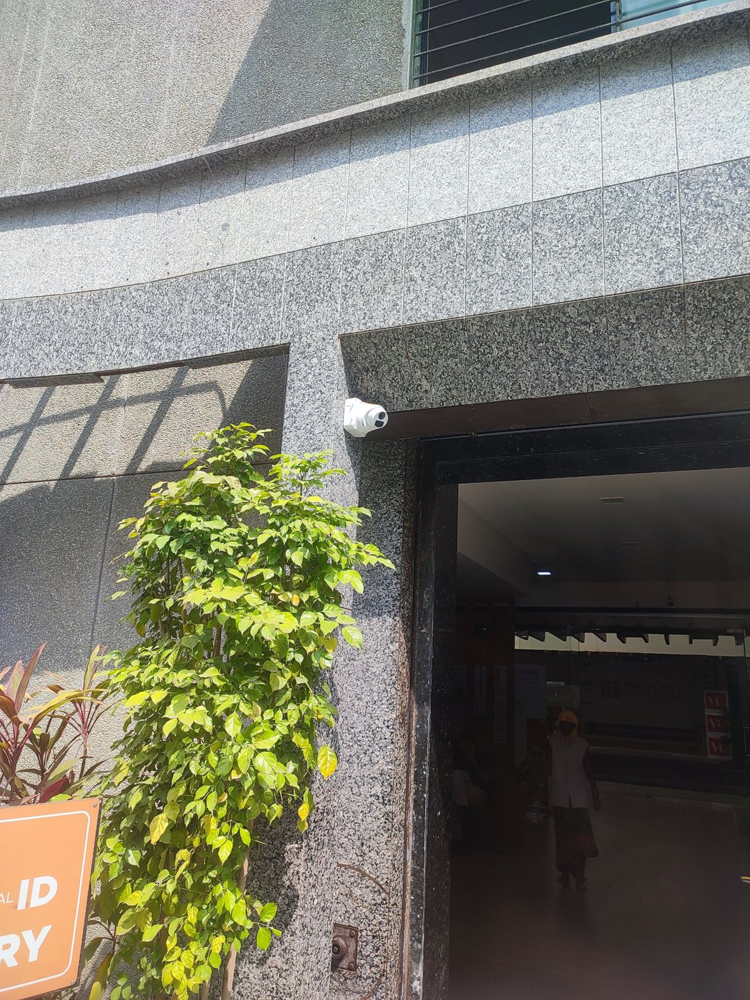

Connectivity
- The library has Wi-Fi, internet access and a video-conferencing facility.
- Wi-Fi users get a username and password from the IT Department.
- Wi-Fi sessions end automatically after three hours.
VU website
Keeping campus data safe and available. Portals, notices, results and IoT devices all depend on the campus network. This module looks at authentication, user roles, logging, backups and monitoring at a safe, high level.
We did not inspect routers, authentication servers, internal backups or private logs, and we recorded no passwords, IP addresses or configurations. All monitoring examples use fictional data.
From the campus visit and VU's published library page and IT policies.
| Service | Example at VU | Security need |
|---|---|---|
| Public website | Notices, circulars, academic calendar | Readable without login; protect against unauthorised edits |
| Library services | Wi-Fi, Web-OPAC catalogue, e-journals, digital library | Reliable availability; access suited to each resource |
| Student portal / ERP | VUNET registration; bonafide certificate on the ERP | Login, role permissions and private student records |
Aaryan's monitoring and alert lifecycle, using fictional data. It is not VU's actual network.
Design rule: the dashboard must tell a denied login apart from a connection problem or an application outage. These look the same to a user but need different responses.
| What we found | What we suggest |
|---|---|
| Services need different permissions | Role-based views for public and private data |
| Failures should be easy to identify | Show service status with event timestamps |
| Logs may contain sensitive data | Keep limited, role-restricted event records |
| IoT events need controlled integration | Accept only permitted, validated messages |
| Recovery needs a clear process | Document who handles backup and restore |
| VU's internal topology is unknown | Avoid unsupported claims; seek permission for follow-up |
